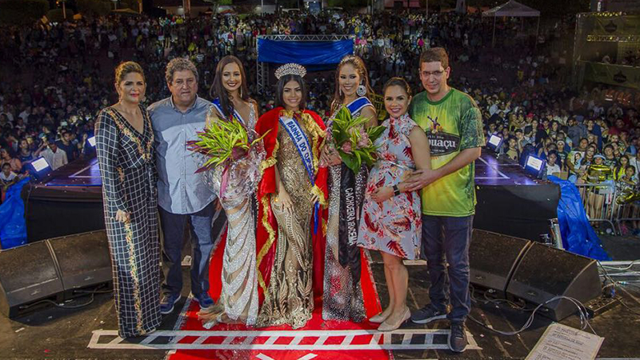
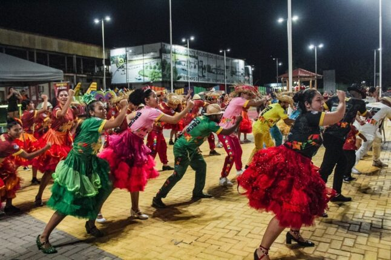
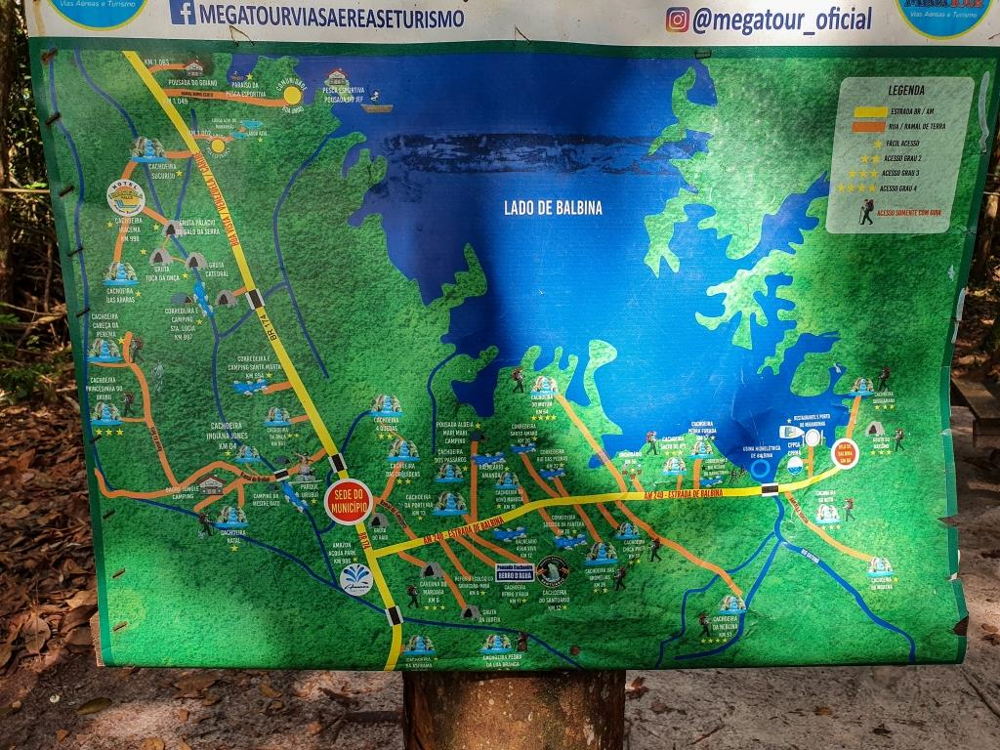
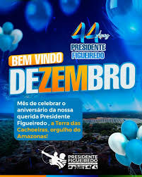

festa do cupuaçu
A Festa do Cupuaçu é o evento mais famoso de Presidente Figueiredo. A programação reúne shows, feira gastronômica, artesanato, apresentações culturais e milhares de turistas todos os anos.

concurso rainha do cupuaçu
tradicional concurso escolhe a representante oficial da festa. O desfile apresenta beleza, cultura e trajes inspirados na Amazônia.

festivais musicais e culturais
Focado nas tradições juninas, acontece em junho e toma conta da Praça da Cultura com apresentações de quadrilhas, cirandas, bois-bumbá, comidas típicas e feiras de artesanato

Eventos de Ecoturismo
Trilhas ecológicas, corridas de aventura e passeios turísticos pelas cachoeiras fazem parte da programação tradicional da cidade.

Aniversário da cidade
Ocorre em dezembro, celebrando a emancipação do município. É marcado pelo festival folclórico local, além de eventos esportivos como a tradicional Corrida e Caminhada Pedestre Terra das Cachoeiras.As comemorações do aniversário geralmente incluem eventos culturais, esportivos e folclóricos, como corridas, caminhadas, apresentações musicais e danças regionais. A prefeitura organiza atividades em praças e parques, envolvendo a comunidade local e visitantes, promovendo a cultura e o desenvolvimento social da cidade Portanto, o 10 de dezembro é a data central das celebrações, refletindo tanto a história quanto o crescimento contínuo de Presidente Figueiredo, consolidando sua identidade como um município turístico e culturalmente rico no Amazonas